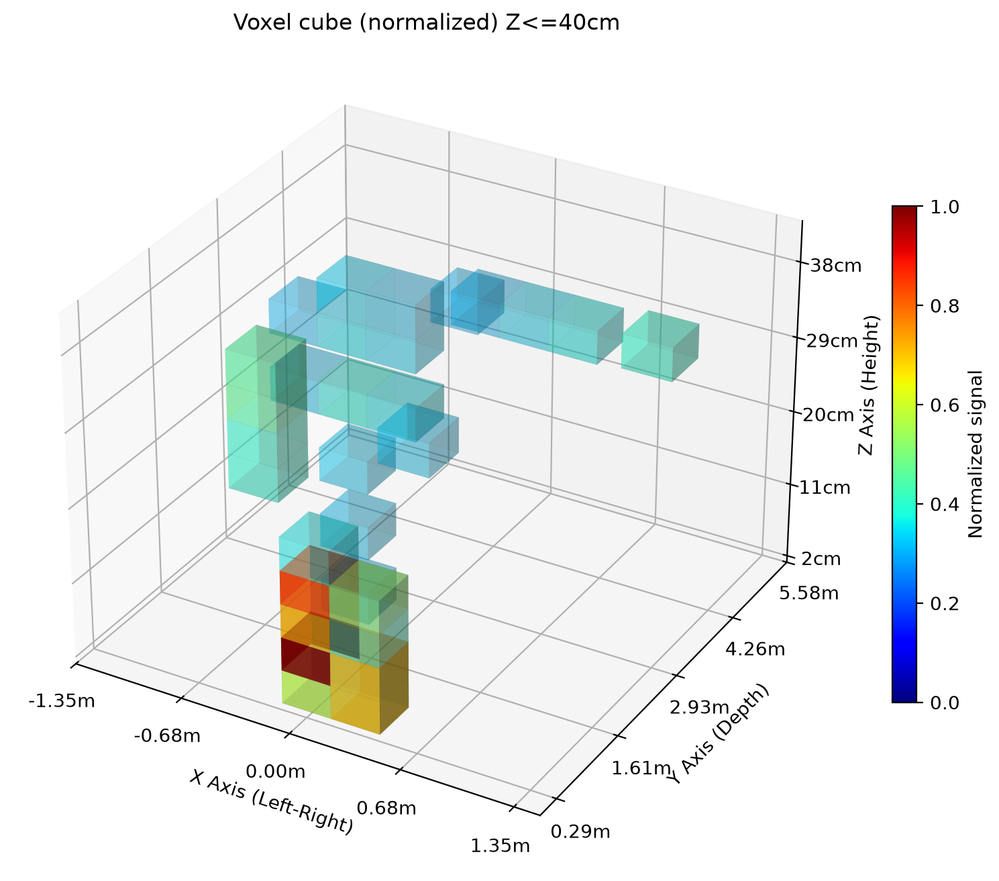

生成自 pc/case/empty_fullroom_pose_20260719.npz，固定网格尺寸为 10×10×10，Z 轴范围限制为 0–40cm。
pc/case/empty_fullroom_pose_20260719.npz
使用脚本：pc/generate_voxel_cube.py
pc/generate_voxel_cube.py
图像显示归一化后的体素强度，阈值可用于过滤噪声。

下载生成的 voxel cube 数据 (.npz)